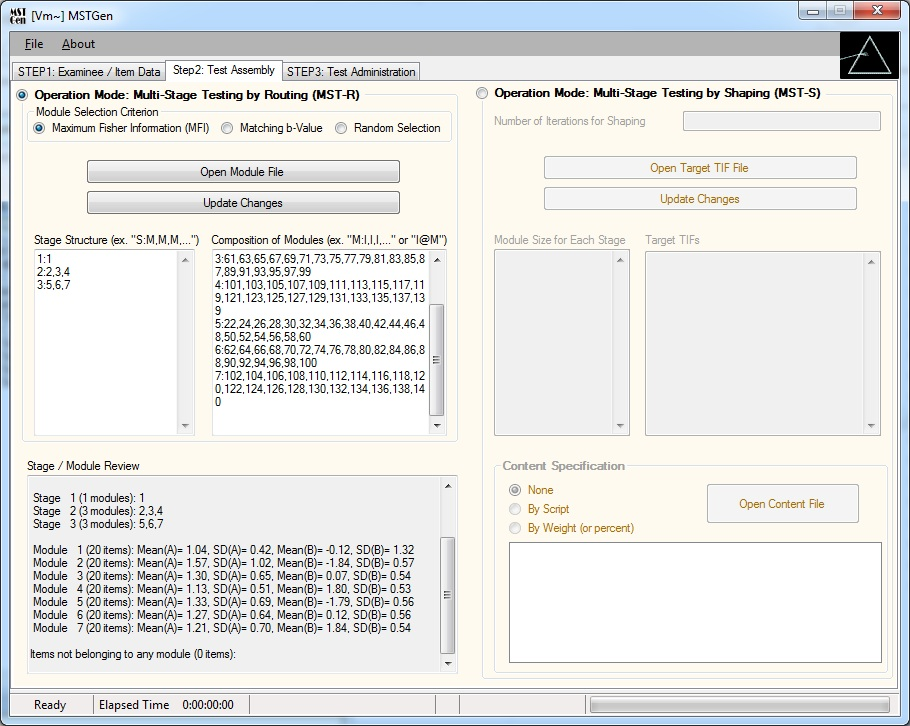

Simulated Data Generator for Multistage Testing
Multistage testing (MST) was developed as an alternative to computerized adaptive testing (CAT) for applications in which it is preferable to administer a test at the level of item sets (i.e., modules). As with CAT, the simulation technique in MST plays a critical role in the development and maintenance of tests. Theoretically, MST is a special case of CAT; technically, however, MST and CAT are completely different in how test systems work. Existing CAT simulation programs cannot accommodate MST-based tests. MSTGen was developed to serve various purposes ranging from fundamental MST research to technical MST program evaluations.
Two different modes for MST are supported. The first is the typical, traditional MST in which examinees are routed to one of several preassembled test modules based on their previous responses. Users have three different module selection criteria to choose from (maximum Fisher information, minimum average difficulty difference, and random selection) and can employ sets of multiple parallel modules (i.e., panels) for test exposure control. MSTGen supports up to 990 stages and modules with few limits in the number of items. The second mode is designed for the new MST approach (Han & Guo, 2012), which shapes an item module for each stage on the fly based on test information function targets.
MSTGen supports various test administration options to create test environments that are as close as possible to live testing situations. Interim and final score estimates can be calculated using ML, MAP, or EAP estimations, or any combination. Users can also set the initial score value, range of score estimates, and restriction in estimate change. The number of test takers administered simultaneously and the frequency of communication between test server and client computers can also be conditioned.
As a Windows-based application, MSTGen provides a user-friendly graphical interface. Most features can be accessed by just a few simple point-and-click movements. The main interface consists of three easy-to-follow steps: Examinee/Item Data, Module Assembly, and Test Administration.
MSTGen can read user-specified existing data and can generate new data sets as well. Score distribution can be drawn from normal, uniform, or beta distributions, and item parameters can be generated from normal, uniform, and/or lognormal distributions. The tool also offers several graphical analysis tools such as distribution density functions, item response functions, and information functions at both item and pool levels. For more advanced research, MSTGen provides options to input differential item functioning (DIF) or item parameter drift (IPD) information as well as preexisting item exposure data.

Requires Microsoft Windows Vista or later with .NET Framework 2.0 or higher (included in Windows Vista and later).